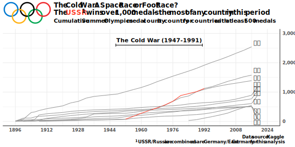

library(tidyverse)
library(emoji)
library(ggrepel)
library(ggtext)
library(ggimage)
olympics <- readr::read_csv('athlete_events.csv') %>% rename_with(tolower)
noc <- readr::read_csv("noc_regions.csv") %>% rename_with(tolower)Inaugural Mastery Quest - Summer Olympics
Learn more on Bletchley.org!
This week’s Data Science Mastery Quest, or Data Quest, was to find a dataset on the Summer Olympics and create a visualization, model, app, or other data-related output using the tool of your choice.
Below is my contribution followed by the how-to, for those interested.

How I Made It
I started with the research question, what countries have been the most dominant all-time?
To start, I found this data from an old Kaggle contest. In order to manipulate and visualize it, I’m loading the tidyverse of packages and the emoji package for fun graphics.
Taking a peek at the data, I can see it’s one row per athlete per year per event. I also see it has the Winter Olympics included. I’ll want to filter these out considering the Summer Olympics theme. I’ll also need to count only one medal per event so team sports like basketball and relays don’t skew the counts.
| id | name | sex | age | height | weight | team | noc | games | year | season | city | sport | event | medal |
|---|---|---|---|---|---|---|---|---|---|---|---|---|---|---|
| 1 | A Dijiang | M | 24 | 180 | 80 | China | CHN | 1992 Summer | 1992 | Summer | Barcelona | Basketball | Basketball Men’s Basketball | NA |
| 2 | A Lamusi | M | 23 | 170 | 60 | China | CHN | 2012 Summer | 2012 | Summer | London | Judo | Judo Men’s Extra-Lightweight | NA |
| 3 | Gunnar Nielsen Aaby | M | 24 | NA | NA | Denmark | DEN | 1920 Summer | 1920 | Summer | Antwerpen | Football | Football Men’s Football | NA |
| 4 | Edgar Lindenau Aabye | M | 34 | NA | NA | Denmark/Sweden | DEN | 1900 Summer | 1900 | Summer | Paris | Tug-Of-War | Tug-Of-War Men’s Tug-Of-War | Gold |
| 5 | Christine Jacoba Aaftink | F | 21 | 185 | 82 | Netherlands | NED | 1988 Winter | 1988 | Winter | Calgary | Speed Skating | Speed Skating Women’s 500 metres | NA |
| 5 | Christine Jacoba Aaftink | F | 21 | 185 | 82 | Netherlands | NED | 1988 Winter | 1988 | Winter | Calgary | Speed Skating | Speed Skating Women’s 1,000 metres | NA |
I’d like to visualize cumulative medal counts by country to see if there are stretches of dominance. To do this, I’ll need to aggregate the athlete-event data by country and year. I also need a reference table for the country flag emojis.
cumulative_medals <-
olympics %>%
left_join(
noc,
by = "noc"
) %>%
filter(season == "Summer", !is.na(medal)) %>%
# Rename UK and USA for emoji match later
mutate(
team = case_when(
noc == "GBR" ~ "United Kingdom",
noc == "USA" ~ "United States",
TRUE ~ region
)
) %>%
# Aggregate medals by country and year
group_by(team, year, medal) %>%
summarise(n = n_distinct(event), .groups = "drop") %>%
pivot_wider(names_from = medal, values_from = n, values_fill = 0) %>%
mutate(Total = Gold + Silver + Bronze) %>%
group_by(team) %>%
arrange(team, year) %>%
# Create a cumulative sum
mutate(across(Bronze:Total, ~ cumsum(replace_na(.x, 0))))
country_flags <-
emojis %>%
filter(subgroup == "country-flag") %>%
mutate(country = str_extract(name, "(?<=flag: ).*"))With these aggregate tables, I’m ready to plot. See inline comments for detail.
by_country <-
cumulative_medals %>%
# Only show countries with at least 500 total medals
filter(max(Total) >= 500) %>%
left_join(country_flags, by = c("team" = "country")) %>%
group_by(team) %>%
# Only label the last year with the flag emoji to avoid noise
mutate(label = if_else(year == max(year), emoji, NA_character_)) %>%
ggplot(aes(x = year, y = Total)) +
# Highlight Russia/USSR in red during Cold War years
geom_line(
aes(
group = team,
color = if_else(
team == "Russia" & year >= 1947 & year <= 1991,
"#FF3C28",
"grey60"
)
)
) +
scale_color_identity() +
geom_text_repel(
aes(label = label),
family = "DIN Alternate",
hjust = 0,
vjust = 0.5,
nudge_y = 15,
segment.size = 0.2,
xlim = c(2016, NA)
) +
# Set ticks to years divisible by four to align with years in which Summer Games were held
scale_x_continuous(limits = c(1896, 2024), breaks = seq(1896, 2024, by = 16)) +
scale_y_continuous(
limits = c(0, 3000),
labels = scales::comma,
position = "right") +
labs(
title = "<b>The Cold War: A Space Race or Foot Race?</b><br>The <span style='color: #ff3c28'>USSR</span><sup>1</sup> wins over 1,000 medals -- the most of any country in this period",
subtitle = "Cumulative Summer Olympics medal count by country for countries with at least 500 medals",
x = NULL,
y = NULL,
caption = "Data source: Kaggle<br><sup>1</sup> USSR/Russia are combined as are Germany/East Germany for this analysis") +
# Add Cold War annotation
geom_errorbarh(
inherit.aes = FALSE,
data = tibble(xmin = 1947, xmax = 1991, y = 2600),
aes(xmin = xmin, xmax = xmax, y = y),
height = 100
) +
annotate(
"text", x = 1969, y = 2700,
label = "The Cold War (1947-1991)",
family = "DIN Alternate",
hjust = 0.5, vjust = 0
) +
theme_minimal() +
theme(
plot.title = element_markdown(margin = margin(l = 100, b = 5), vjust = 0.5),
plot.subtitle = element_markdown(margin = margin(l = 100, b = 10)),
plot.caption = element_markdown(),
text = element_text(family = "DIN Alternate"),
axis.line = element_line(color = "grey20"),
strip.text = element_text(size = 48)
) +
coord_cartesian(clip = 'off') +
# Add Olympic Rings logo
annotation_custom(
magick::image_read("olympic_rings.svg") %>% grid::rasterGrob(interpolate = TRUE),
x = 1890, xmax = 1914, y = 3300, ymax = 4100)
ggsave(by_country, file = "by-country.svg", width = 8, height = 4)